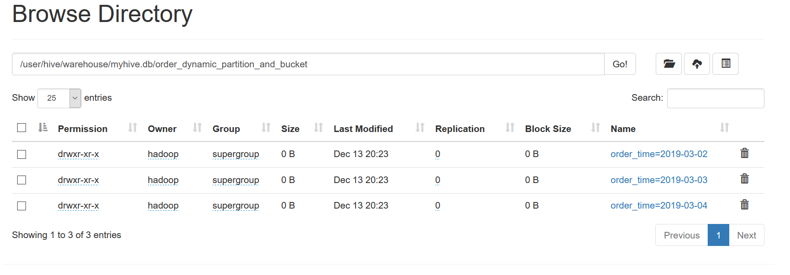

创建一个既分区又分桶的表，并向该分区分桶表中加载数据；最后在浏览器查看其文件列表，对列表结果截图。作业中还需要包括创建表的语句, 插入数据语句,以及设置相关属性的语句
- 准备数据：
cd ~ cat >order_partition.txt <<EOF 01 110 2019-03-02 02 120 2019-03-02 03 130 2019-03-02 04 140 2019-03-02 05 150 2019-03-02 06 160 2019-03-02 07 170 2019-03-02 08 180 2019-03-02 09 190 2019-03-02 10 200 2019-03-02 11 210 2019-03-02 12 220 2019-03-02 13 230 2019-03-02 14 240 2019-03-03 15 250 2019-03-03 16 260 2019-03-04 17 270 2019-03-04 18 280 2019-03-04 19 290 2019-03-04 20 300 2019-03-04 EOF
- 分别创建普通表t\order和动态分区加分桶表order\dynamic\partition\and\bucket的表结构
create database myhive;
use myhive;
--创建普通表t_order表结构
CREATE TABLE `myhive.t_order`(
`order_number` STRING,
`order_price` DOUBLE,
`order_time` STRING
) ROW FORMAT DELIMITED FIELDS TERMINATED BY ' ';
--创建动态分区加分桶表order_dynamic_partition_and_bucket表结构
CREATE TABLE `myhive.order_dynamic_partition_and_bucket`(
`order_number` STRING,
`order_price` DOUBLE
) PARTITIONED BY(`order_time` STRING)
CLUSTERED BY(`order_number`) INTO 4 BUCKETS
ROW FORMAT DELIMITED FIELDS TERMINATED BY ' ';
- 向普通表t\order加载数据
LOAD DATA LOCAL INPATH '/home/hadoop/order_partition.txt' OVERWRITE INTO TABLE `myhive.t_order`;
- 加载数据到动态分区表order\dynamic\partition中
-- 开启动态分区功能 set hive.exec.dynamic.partition=true; -- 设置hive为非严格模式 set hive.exec.dynamic.partition.mode=nonstrict; -- 把t_order普通表中的数据动态加载到分区表order_dynamic_partition中 insert into table order_dynamic_partition partition(order_time) select order_number, order_price, order_time from t_order;
- 把t\order普通表中的数据动态分区分桶加载到order\dynamic\partition\and\bucket中
INSERT INTO TABLE `myhive.order_dynamic_partition_and_bucket` PARTITION(`order_time`) SELECT `order_number`, `order_price`, `order_time` FROM `myhive.t_order`;
另外也可以使用sql文件通过hive直接导入：
hive -f myhive_order_dynamic_partition_and_bucket.sql
运行结果：
分区结构：
 分桶结构：